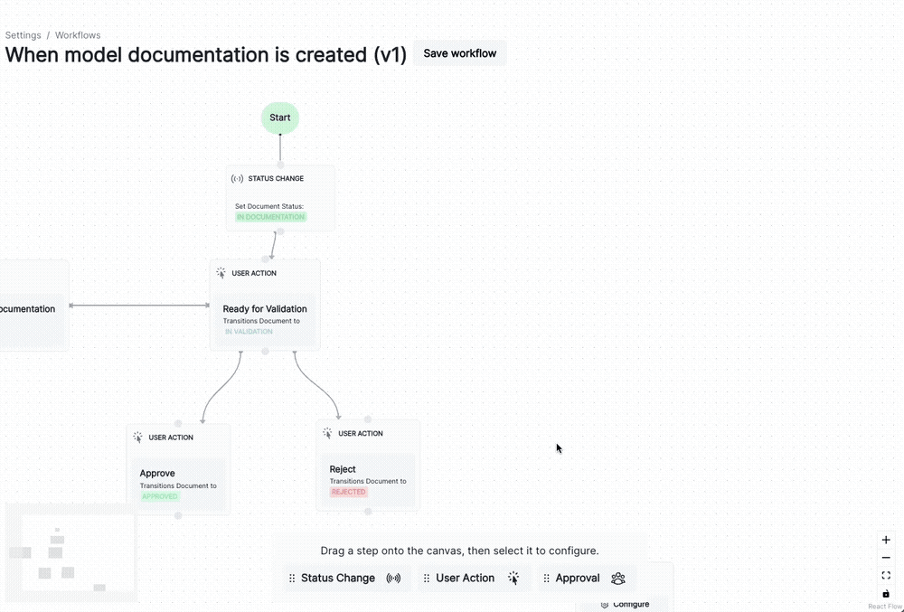

July 22, 2024
Release highlights
On top of our increased support for tests and arrays in the ValidMind Developer Framework and our first ValidMind Academy training modules, we’ve introduced customizable model workflows, new role functionality, and new report types.
Support for comparison tests
An important addition to the ValidMind Developer Framework, you can now run comparison tests with the developer framework. This feature is useful when you want to run the same test against multiple combinations of models or datasets. A comparison test creates a single documentation block that compares the individual results.
Here’s a demonstration of how comparison tests work:

The updated run_test() function allows you to pass an input_grid which runs a test for all combinations of inputs.
Input grid example
input_grid = {
"model": ["XGBoost"],
"dataset": ["train_dataset", "test_dataset"],
}A test runs once for each of the following input groups:
{
"model": "XGBoost",
"dataset": "train_dataset"
}
{
"model": "XGBoost",
"dataset": "test_dataset"
}Example function calls
from validmind.tests import run_test
input_grid = {
"model": ["XGBoost"],
"dataset": ["train_dataset", "test_dataset"],
}
result = run_test(
"validmind.model_validation.sklearn.ClassifierPerformance",
input_grid,
)
result = run_test(
"validmind.model_validation.sklearn.ConfusionMatrix",
input_grid,
)
result = run_test(
"validmind.model_validation.sklearn.ROCCurve",
input_grid,
)Customizable model workflows
You can now manage lifecycle processes within your ValidMind Platform UI setup using customizable model workflows. You use these workflows to match your organizational needs for overseeing model development, validation, or implementation activities.
Default workflows are provided for you as suggestions. You can customize the following default workflows:
- Model documentation
- Inventory model
Here’s a demonstration of how the user interface lets you configure a model workflow:

Enhancements
Support for 2D arrays in add_extra_column
With enhancements to the VMDataset class, the add_extra_column method now supports adding 2D arrays as single columns in the dataset’s DataFrame. These changes ensure that 2D arrays are stored in a single column without altering the DataFrame structure.
Usage example:
import numpy as np
import pandas as pd
# sample DataFrame
df = pd.DataFrame({
'A': [1, 2, 3],
'B': [4, 5, 6]
})
# sample 2D array
array_2d = np.array([
[1, 2],
[3, 4],
[5, 6]
])
vm_dataset = vm.init_dataset(
dataset=df,
input_id=dummy_ds
)
vm_dataset.add_extra_columns(
"dummy_column",
array_2d
)Add new role functionality
Users with the Create_Role permission can now add a new role under Settings Roles: Work with roles in the ValidMind Platform UI
New report types
We added a number of new report types:
- Number of models by business unit and tier
- Number of models by status
- Avgerage number of days models spend in a status
- Models by number of findings
Bug fixes
Updated test descriptions
We fixed a number of missing test descriptions that were caused by a scripting issue: Read our test descriptions
Documentation
New training collateral
We’re introducing the first training modules that are part of our ValidMind Academy training program for:
- Model developers
- Model validators
- Administrators
Our training modules are interactive. They combine instructional content with our live product and are easy to use.